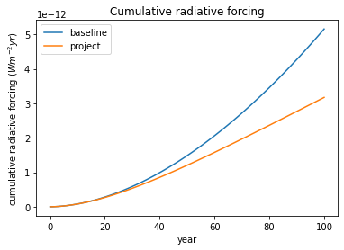
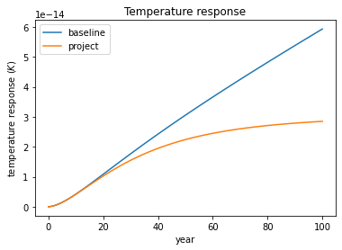
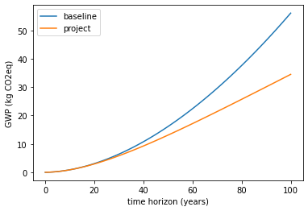
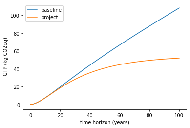

Compute climate metrics#
import sys
from matplotlib import pyplot as plt
import numpy as np
from scipy.stats import lognorm
# to give us access to the root when climate metrics is not installed locally
sys.path.append('..')
from climate_metrics import (
GWP,
GTP,
cumulative_radiative_forcing,
temperature_response
)
---------------------------------------------------------------------------
ModuleNotFoundError Traceback (most recent call last)
Input In [1], in <cell line: 3>()
1 import sys
----> 3 from matplotlib import pyplot as plt
4 import numpy as np
5 from scipy.stats import lognorm
ModuleNotFoundError: No module named 'matplotlib'
An emission of 1 kg CO$_2$ or CH$_4$.#
time_period = 100
time_horizon = np.arange(time_period+1)
emission = 1 # 1 kg of CO2
GHG='co2'
gwp = GWP(time_period, emission, GHG)
gtp = GTP(time_period, emission, GHG)
print(f'GWP {time_period} for emitting 1 kg {GHG}: {gwp:.0f} (kg CO2 eq)')
print(f'GTP {time_period} for emitting 1 kg {GHG}: {gtp:.0f} (kg CO2 eq)')
GHG='ch4'
gwp = GWP(time_period, emission, GHG)
gtp = GTP(time_period, emission, GHG)
print(f'GWP {time_period} for emitting 1 kg {GHG}: {gwp:.0f} (kg CO2 eq)')
print(f'GTP {time_period} for emitting 1 kg {GHG}: {gtp:.0f} (kg CO2 eq) ')
GWP 100 for emitting 1 kg co2: 1 (kg CO2 eq)
GTP 100 for emitting 1 kg co2: 1 (kg CO2 eq)
GWP 100 for emitting 1 kg ch4: 28 (kg CO2 eq)
GTP 100 for emitting 1 kg ch4: 4 (kg CO2 eq)
For an emission scenario#
# parameters
baseline_emission_scenario = np.ones(time_period+1)
project_emission_scenario = lognorm.sf(time_horizon, s=np.log(2.5), loc=0, scale=40)
GHG = 'CO2'
# gwp calculations
gwp_baseline = GWP(time_period, baseline_emission_scenario, GHG, annual=False)
print(f'GWP {time_period} of baseline scenario: {gwp_baseline:.0f} kg CO2 eq')
gtp_baseline = GTP(time_period, baseline_emission_scenario, GHG, annual=False)
print(f'GTP {time_period} of baseline scenario: {gtp_baseline:.0f} kg CO2 eq')
gwp_project = GWP(time_period, project_emission_scenario, GHG, annual=False)
print(f'GWP {time_period} of project scenario: {gwp_project:.0f} kg CO2 eq')
gtp_project = GTP(time_period, project_emission_scenario, GHG, annual=False)
print(f'GTP {time_period} of project scenario: {gtp_project:.0f} kg CO2 eq')
# plot
plt.plot(baseline_emission_scenario, label='baseline')
plt.plot(project_emission_scenario, label='project')
plt.title("emission scenarios", size=16)
plt.ylim((0,1.05))
plt.ylabel('Annual emissions CO2 (kg)')
plt.xlabel('years')
_ = plt.legend()
GWP 100 of baseline scenario: 56 kg CO2 eq
GTP 100 of baseline scenario: 108 kg CO2 eq
GWP 100 of project scenario: 34 kg CO2 eq
GTP 100 of project scenario: 52 kg CO2 eq
Going under the hood of GWP and GTP#
We can look at the underlying physical reponse of the models used to generate GWP and GTP. GWP is a relative measure of cumlative radiative forcing (measured in Watts * meter-2 * yr) which captures the sum of the energy imbalance at the tropopause caused by a GHG emission. GTP is a relative measure of the global average temperature response (measured in Kelvin) caused by a GHG emission.
crf_baseline = cumulative_radiative_forcing(
time_period,
baseline_emission_scenario,
'CO2',
step_size=1,
annual=True)
crf_project = cumulative_radiative_forcing(
time_period,
project_emission_scenario,
'CO2',
step_size=1,
annual=True)
plt.plot(crf_baseline, label='baseline')
plt.plot(crf_project, label='project')
plt.ylabel('cumulative radiative forcing ($W m^{-2} yr$)')
plt.xlabel('year')
plt.title('Cumulative radiative forcing')
_ = plt.legend()

temp_baseline = temperature_response(
time_period,
baseline_emission_scenario,
'CO2',
step_size=1,
annual=True)
temp_project = temperature_response(
time_period,
project_emission_scenario,
'CO2',
step_size=1,
annual=True)
plt.plot(temp_baseline, label='baseline')
plt.plot(temp_project, label='project')
plt.ylabel('temperature response ($K$)')
plt.xlabel('year')
plt.title('Temperature response')
_ = plt.legend()

GWP and GTP at different time points#
While it is common to use GWP 100, we can look at these metrics at different time horizons.
gwp_baseline = GWP(time_period, baseline_emission_scenario, GHG, annual=True)
gwp_project = GWP(time_period, project_emission_scenario, GHG, annual=True)
plt.plot(gwp_baseline, label='baseline')
plt.plot(gwp_project, label='project')
plt.title("")
plt.ylabel('GWP (kg CO2eq)')
plt.xlabel('time horizon (years)')
_ = plt.legend()

gtp_baseline = GTP(time_period, baseline_emission_scenario, GHG, annual=True)
gtp_project = GTP(time_period, project_emission_scenario, GHG, annual=True)
plt.plot(gtp_baseline, label='baseline')
plt.plot(gtp_project, label='project')
plt.ylabel('GTP (kg CO2eq)')
plt.xlabel('time horizon (years)')
_ = plt.legend()
